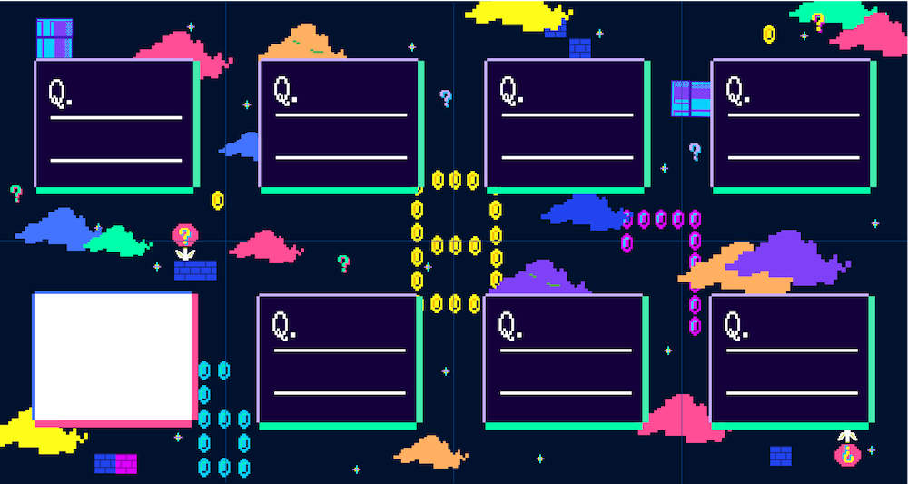
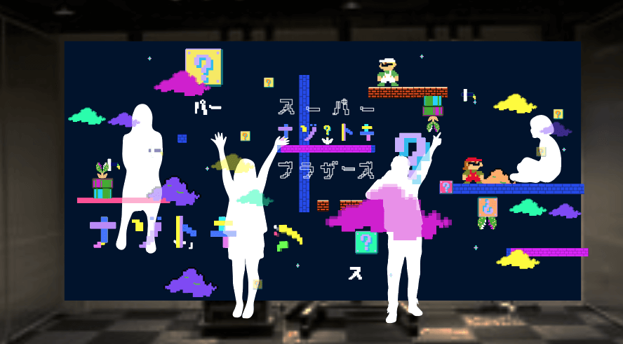
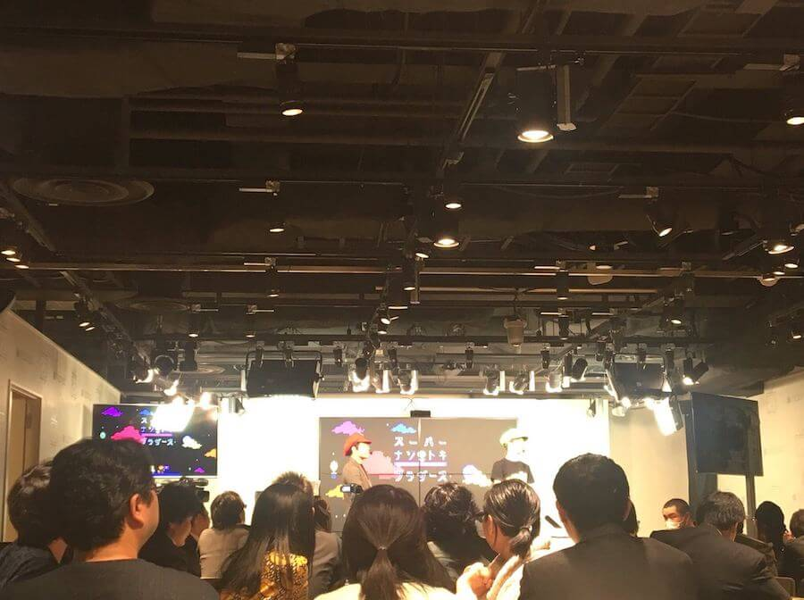
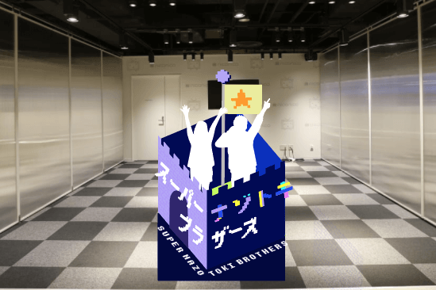

謎解きイベント
▪︎概要
スーパーナゾトキブラザーズという謎解きイベントのデザイン諸々を担当しました。
▪︎ポイント
謎解きイベントという事で全体の雰囲気から摩訶不思議なイメージが伝わり興味をそそれるようドットの大きさを変え違和感を作ったり、カラーリングもあえてまとまらないよう1色だけ明度の違う緑を入れるなどしてデザインに落とし込んでいきました。
また、回答用紙を繋げると文字が浮かび上がる仕掛けでは、実際に社内でユーザーテストを繰り返し浮かび上がる文字の認識具合を全体の謎解きにかかる時間の平均値から調整していきました。
採用案(ロゴ・問題用紙・フォトスポット・ポスター)▼
繋げると文字が浮かび上がる回答用紙▼
仕掛けの無い回答用紙でも世界観が損なわれないよう意識をしました▼
フォトスポットはアスレチックのように登ったり座ったりできつつプロジェクターで上からオブジェクトを投影する想定▼
実際の会場の写真▼
他案お気に入り(ロゴ・フォトスポット・ポスター)▼
 BACK
BACK